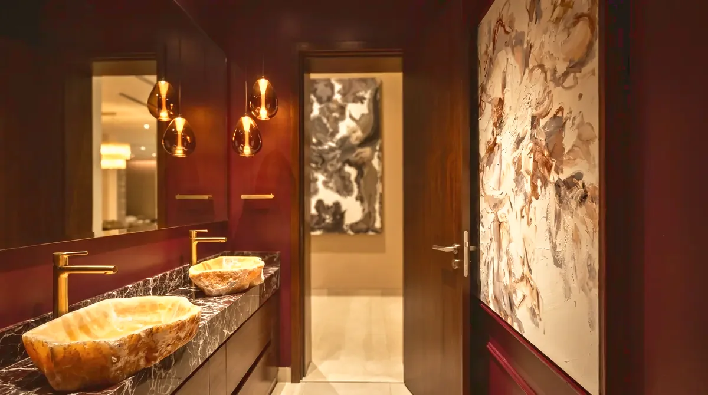
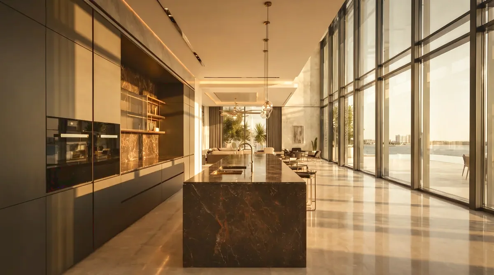

Architecture before finish
Proportion, circulation and daylight are settled in plan and section before a single material is chosen. A room that is right in structure needs less decoration to feel complete.

Dubai, since 2015. Complete interiors — drawn, specified, built and finished under one authorship.
Karen K Sanctuaries was established in Dubai in 2015. More than a decade later it remains a small studio by choice: every project is drawn, specified and delivered by the same hands that take the brief.
The work is interior architecture rather than decoration. Plans and sections come first — where a wall should fall, how a room is entered, where the daylight lands — and the materials follow that structure instead of covering it.
Joinery, lighting, stone and soft furnishing are drawn as one set, so what is specified is what can be built. The studio stays through procurement and site, and hands over rooms that are finished rather than furnished.
Projects run across private residences, hospitality and commercial interiors, in the UAE and abroad. Some are complete builds; others are existing properties transformed through the studio's own method.
Proportion, circulation and daylight are settled in plan and section before a single material is chosen. A room that is right in structure needs less decoration to feel complete.
Joinery, lighting, stone, services and furniture are drawn together rather than passed between trades. Decisions are made on paper, where they are still inexpensive to change.
The studio runs procurement, coordinates the trades and styles the rooms at the end. The handover is a home that can be lived in that evening.

50Top Homes of Dubai
A list that looks past styling to the whole room — how it is planned, how it is lit, how it is built. The studio's residential work was chosen for interiors carried from first drawing to final object by one team.

If something here is unanswered, say so in your first message — the studio replies personally.
The studio is based in Dubai and takes projects across the UAE and internationally — London, Miami, Beirut and Ibiza among them. Site visits are made in person at the stages that need them, and the studio works with local consultants and contractors wherever a project stands.
Interior architecture — plans, sections and elevations — then bespoke joinery, lighting design, stone and finishes, furniture, art and objects, procurement, and coordination on site through to handover and styling. One team carries all of it, so nothing falls between drawings and delivery.
The Method is the studio's fast-track route for a property that already exists. It changes light, joinery, surfaces and furniture without moving structure, and can be made reversible where a home is rented. The Karen K Method sets out the stages in full.
Often, yes. The studio authors the interior and coordinates with the architect, engineers and contractor already appointed, issuing its drawings into their programme. Where no team is in place, the studio can recommend one.
Yes, when the room can stand on its own — a kitchen, a principal suite, a bar or a reception. What the studio avoids is a room designed in isolation from the home around it; if the two would fight, that is said at the first conversation.
It depends on scope and on what already exists. A transformation through the Method is measured in weeks; a complete villa interior runs across several months of drawing, procurement and site. A dated programme is issued with the proposal, before anything is committed.
A conversation — the property, the brief, how you live or work. The studio then reviews plans or visits the site, and sends a written scope with stages, programme and fees. The first conversation carries no obligation.
No. Several homes remain private at their owners' request, and confidentiality is kept where it has been agreed. What is shown here is the work the studio is free to show.
Tell us about the property, where it is and what you want it to become.
Start a project